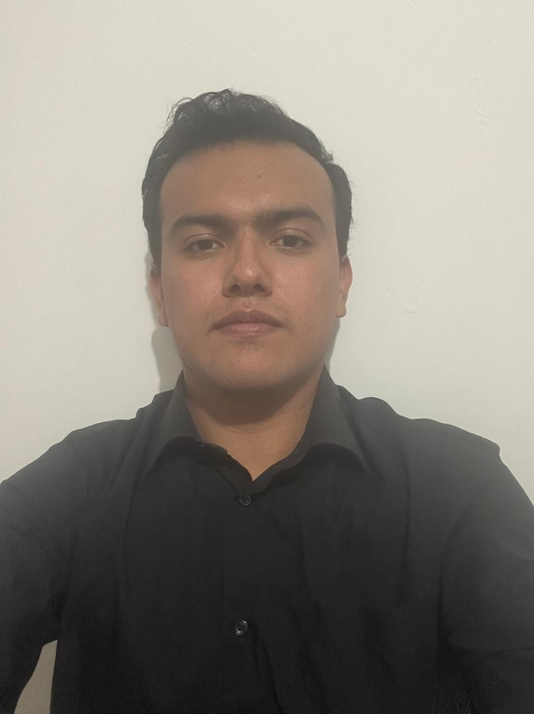

En curso
Pedagogía
Universidad Pedagógica Nacional

Hoja de vida interactiva
Vengo de la salud, paso por la técnica y hoy estudio para enseñar. Son dos perfiles distintos, cada uno con su propio portafolio — elige con cuál empezar.
Hoja de vida
Educador en formación que también programa aplicaciones por cuenta propia.▌
Curso Pedagogía en la Universidad Pedagógica Nacional, con una base previa en Licenciatura en Educación Religiosa. Enfoco mi práctica en estrategias que fomentan la autonomía y el hábito de estudio.
Mi formación técnica previa en salud y sistemas —incluida en el otro portafolio— es también donde aprendí a sostener la atención de un grupo y a explicar procesos paso a paso, algo que hoy traslado al aula.
Un sistema de recompensas para motivar a los niños a construir hábitos de estudio, disciplina y autonomía en su proceso de aprendizaje: acumulan puntos por cumplir tareas y los canjean semanalmente por útiles o beneficios en la jornada escolar. El objetivo pedagógico es que el logro se sienta tangible y propio.
Diseñé una lógica para incorporar al proceso de aprendizaje lo que le importa a cada niño — su religión, el equipo del que es hincha, sus gustos y favoritos — de modo que el contenido se conecte con algo propio y sea más fácil de entender, recordar y disfrutar.
Pensé varias herramientas orientadas a que los contenidos sean fáciles de entender y de recordar, buscando que lo aprendido no se quede en la teoría, sino que pueda emplearse de manera apropiada en un plano práctico.
Diseñé una lógica para poner el aprendizaje a circular entre los estudiantes: unos dan pistas a otros y a la vez contribuyen al aprendizaje de sus compañeros, de modo que el proceso se vuelve social y, a mediano plazo, el conocimiento se arraiga.
Diseñé una lógica administrativa para hacer sostenible la atención educativa de los niños en cualquier condición socioeconómica, integrando a varios actores y aliados — empresas, colegios, iglesias y padres — de forma que se fortalezca el tejido social y haya retorno para todos los que participan.
Hoja de vida
Programador autodidacta, oficinista y analista de datos por afición y por oficio.▌
Construyo programas y aplicaciones que resuelven problemas concretos. No tengo formación formal en desarrollo de software: aprendí a programar por cuenta propia, con la misma disciplina y aprendizaje constante con que hago cualquier otro oficio. Mi formación formal viene del sector salud y de la técnica agropecuaria, dos oficios donde un error tiene consecuencias reales.
La programación de aplicaciones no viene de estos títulos: la aprendí por cuenta propia, practicando fuera del aula.
Atención al usuario, manejo de archivo, aplicativos internos y call center.
Atención asistencial y servicio directo al paciente.
Un sistema de puntos y canje que diseñé y armé de principio a fin: reglas claras de acumulación, un umbral de canje y una mecánica que hay que probar para que cuadre.
Construí una tienda virtual donde se entregan certificados de contribución a los aliados que apoyan el proceso educativo, con un manejo de cuentas que permite a los niños reclamar sus incentivos.
Serie de videos que reúno como material de apoyo para repasar y reforzar los temas vistos en clase.
Ver lista de reproducción ↗Página web y aplicación para estudiar y repasar los temas de clase.
Ver aplicación ↗Aplicación para impartir y hacer seguimiento del aprendizaje mediante torneos de estudio entre los estudiantes.
Ver aplicación ↗Aplicación para organizar y armar rutinas de ejercicio por días.
Toca una referencia para ver el teléfono.